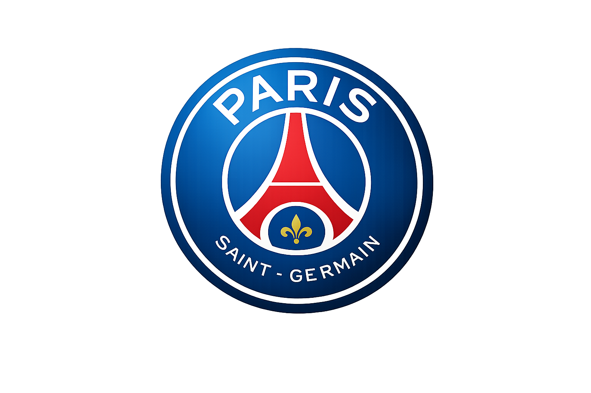

Paris Saint-Germain

Fundação (1970)
Fundado em 12 de agosto de 1970, o Paris Saint-Germain surgiu com o sonho
de dar à cidade de Paris um grande clube de futebol.
O PSG nasceu da união entre o Paris FC (fundado em 1969)
e o Stade Saint-Germain (fundado em 1904).
Primeiros Anos e Separação (1972)
Em seu primeiro ano de existência, o PSG conseguiu o acesso à primeira divisão.
Porém, em 1972, a união entre os dois clubes chegou ao fim.
Após a separação, o PSG precisou recomeçar na terceira divisão do futebol francês.
A Retomada
Na temporada 1972–1973, o PSG terminou em segundo lugar na Divisão 3
e conquistou o acesso para a Divisão 2.
Já na temporada 1973–1974, o clube fez uma excelente campanha
e garantiu o retorno à primeira divisão, voltando à elite do futebol francês.
Consolidação em Paris
Após o retorno à primeira divisão, o PSG passou a mandar seus jogos
no Parc des Princes. No mesmo período, o Paris FC foi rebaixado,
consolidando o PSG como o principal representante da capital francesa.
L'équipe victorieuse
O time vitorioso
Em 1982, o clube conquistou sua primeira Copa da França.
Dois anos depois, repetiu o feito, ajudando a construir sua identidade vencedora.
O Primeiro Título Francês
O PSG conquistou seu primeiro título do Campeonato Francês em 1986,
com um estilo ofensivo que elevou o clube de patamar no país.
Era Canal+ nos Anos 90
Nos anos 90, o clube passou por uma verdadeira revolução.
A emissora Canal+ assumiu o controle do PSG em 1991, investindo recursos
e profissionalizando a gestão.
Com craques como Raí, George Weah, David Ginola e Bernard Lama,
o PSG viveu uma de suas fases mais vitoriosas.
Entre 1992 e 1998, conquistou:
- 5 Copas da França
- 2 Copas da Liga
- 1 Campeonato Francês
- Recopa Europeia de 1996
Anos 2000: Lutas e Glórias
Após o sucesso dos anos 90, o PSG enfrentou uma fase difícil.
Problemas financeiros, trocas de técnicos e baixo desempenho marcaram o período.
Mesmo assim, conquistou títulos importantes como as Copas da França de 2004 e 2006,
além de contar com Ronaldinho Gaúcho, que atuou entre 2001 e 2003.
Era Qatar Sports Investments (QSI)
A grande virada aconteceu em 2011, quando o clube foi adquirido pelo QSI.
A partir daí, o PSG se transformou em um gigante mundial, com grandes investimentos.
Entre os principais nomes dessa fase estão:
- Zlatan Ibrahimović
- Thiago Silva
- Edinson Cavani
- David Beckham
- Marco Verratti
O Trio MNM
Em 2017, o PSG contratou Neymar por 222 milhões de euros,
a maior transferência da história do futebol.
Na mesma época, chegou Kylian Mbappé, jovem destaque do Mônaco.
Em 2021, Lionel Messi completou o trio ofensivo.
Em 2020, o PSG chegou à final da Champions League,
mas perdeu para o Bayern de Munique por 1 a 0.
Primeira Champions League (2025)
Após a saída de grandes estrelas, o PSG conquistou sua primeira Champions League
na temporada 2024/25, sob o comando de Luis Enrique.
- Campeonato Francês
- Copa da França
- Supercopa da França
- Champions League
- Copa Intercontinental
Temporada Quase Perfeita
O PSG fez uma campanha histórica, sendo campeão invicto no campeonato francês
e vencendo a final da Champions por 5 a 0 contra a Inter.
A única derrota marcante foi na final do Mundial contra o Chelsea.